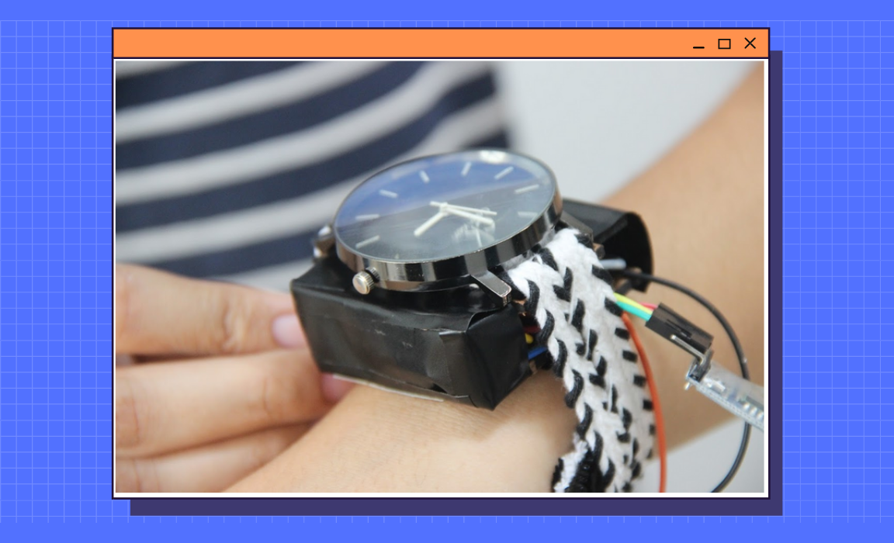

Fight Back
[tECHNOLOGY FOR SOCIAL GOOD] [ARDUINO]
Universal safety device for women
Introduction
To put it simply, it's a bag. But not just any ordinary bag. It's a smart bag, made specifically to counter the issues of women safety. A small compact box enclosed within a stylish handbag, it connects to a watch on your hand embedded with a panic button, which, when pressed, will activate a speaker situated inside your bag, and your GPS coordinates will be sent to two preset numbers so that your loved ones know where to find you in case of an emergency. An additional feature is that the panic button also inconspicuously turns on the camera on your phone, recording the faces of your attackers or perpetrators of the crime.
Features
The secs of the device are:
- Compact device that can be placed in any handbag.
- sos button connected to a loud speaker to alert anyone in the surroundings
- Turns on phone camera for video recording and sends out gps location to loved ones